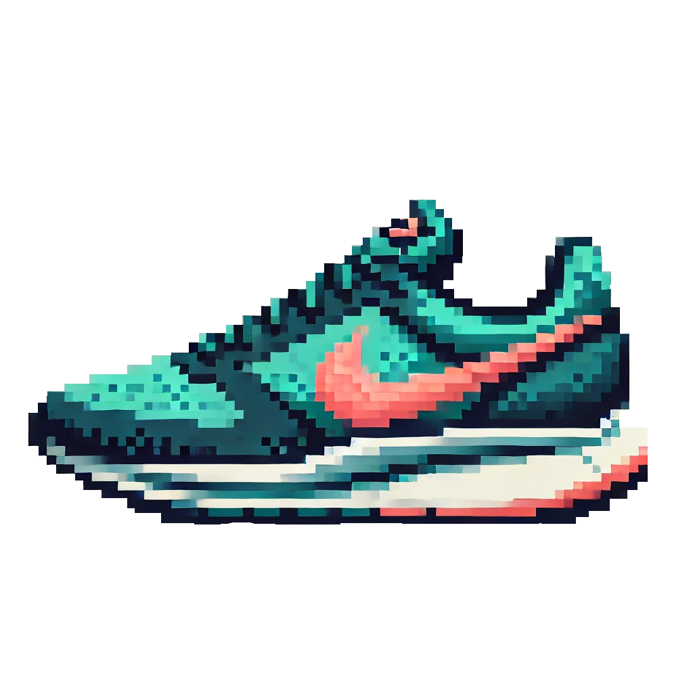

The Fast Track
A Guide To Track and Field
Track and Field is a sport with a variety of running, jumping, and throwing events. Running events range from long distances such as the marathon to as short as the 60-meter dash. Throwing events such as shot put and javelin require athletes to have lots of strentgh. Athletes that are jumpers compete in long jump or triple jump and they have a strong explosive albility to jump. Athletes generally choose only one or two events to specialize in.

100m/100mh Start
200m Start
400m/400mh Start
Finish Line
Track Markings
The Mens 100m World Record
Holder has always been known as the fastest man alive.
It is one of the most popular events in the sport and is the shortest distance in outdoor track and field.
It is run on the straight part of the track, where athletes line up and place their feet on the starting block
and hands behind the line.
10 Latest Mens 100m World Record Holders
Time
Name
Year
9.58
Usain Bolt
2009
9.69
Usain Bolt
2008
9.72
Usain Bolt
2008
9.74
Asafa Powell
2007
9.77
Asafa Powell
2005
9.78
Tim Montgomery
2002
9.79
Maurice Greene
1999
9.84
Donovan Bailey
1996
9.85
Leroy Burrell
1994
9.86
Carl Lewis
1991
Bolt VS Animals
Usain Bolt can run the 100m dash in only 9.58 seconds with a top speed of 27.8mph, a feat no athlete can yet to come close to.
Since no human can beat Bolt, let's see how he compares to some animals!
10 Latest Womens 100m World Record Holders
Time
Name
Year
10.49
Florence Griffith-Joyner
1988
10.76
Evelyn Ashford
1984
10.79
Evelyn Ashford
1983
10.81
Marlies Göhr
1983
10.88
Marlies Göhr
1982
10.88
Marlies Göhr
1977
11.01
Annegret Richter
1976
11.04
Inge Helton
1976
11.07
Renate Stecher
1972
11.07
Wyomia Tyus
1968
10 Latest Mens 100m World Record Holders
| Time | Name | Year |
|---|---|---|
| 9.58 | Usain Bolt | 2009 |
| 9.69 | Usain Bolt | 2008 |
| 9.72 | Usain Bolt | 2008 |
| 9.74 | Asafa Powell | 2007 |
| 9.77 | Asafa Powell | 2005 |
| 9.78 | Tim Montgomery | 2002 |
| 9.79 | Maurice Greene | 1999 |
| 9.84 | Donovan Bailey | 1996 |
| 9.85 | Leroy Burrell | 1994 |
| 9.86 | Carl Lewis | 1991 |
Bolt VS Animals
Usain Bolt can run the 100m dash in only 9.58 seconds with a top speed of 27.8mph, a feat no athlete can yet to come close to. Since no human can beat Bolt, let's see how he compares to some animals!
10 Latest Womens 100m World Record Holders
| Time | Name | Year |
|---|---|---|
| 10.49 | Florence Griffith-Joyner | 1988 |
| 10.76 | Evelyn Ashford | 1984 |
| 10.79 | Evelyn Ashford | 1983 |
| 10.81 | Marlies Göhr | 1983 |
| 10.88 | Marlies Göhr | 1982 |
| 10.88 | Marlies Göhr | 1977 |
| 11.01 | Annegret Richter | 1976 |
| 11.04 | Inge Helton | 1976 |
| 11.07 | Renate Stecher | 1972 |
| 11.07 | Wyomia Tyus | 1968 |
It takes the average person 15-20 seconds to tie their shoes.
0.00 seconds
Is all the time Florence Griffith-Joyner needs to run 100 meters.